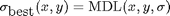

MDLFILT_BASE - Base function for MDLFILT.
Contents
Syntax
[depth,dl] = MDLFILT_BASE(I, scales, sm, der, rho, lam, ani); [depth,dl,best,scales] = MDLFILT_BASE(I, scales, sm, der, rho, lam, ani);
See also
Related: MDLFILT, CONVOLUTION_BASE, ADAPTIVEFILT_BASE, GEODESICFILT_BASE, TENSANIFILT_BASE. Called: GSTSMOOTH_BASE, SMOOTHFILT_BASE, TENSCALEDIRFILT_BASE, IMFILTER.
Function implementation
function [best_depth,dl,varargout] = mdlfilt_base(I, scales, sm, der, rho, lam, ani)
checking parameters and setting variable
[x y C] = size(I); % if length(scales)==3 && scales(1)>scales(2) % scales = linspace(scales(2),scales(3),scales(1)); % end
treat the case where the range of scales was given as [step, min, max]
nscales = length(scales); h = [0 1 0; 1 1 1; 0 1 0];
creating the description lenght matrix
dl = Inf * ones(x,y); if nargout>=2 varargout{1} = zeros(x,y); if nargout>=3, varargout{2} = zeros(x,y); end; end best_depth = zeros(size(I));
main computation
for i=1:nscales
creating a depth matrix
if ani T = gstsmooth_base(I, rho, scales(i), der, sm, ... [], 1, false, false, 8, .4); [l1, l2, e1, e2] = gstdecomp(T); l1 = 1 ./ (sqrt(l1)+eps); l2 = 1 ./ (sqrt(l2)+eps); [gx2, gy2, gxy] = gstdecomp(l2,l1,e2,e1); T(:,:,1,1) = gx2; T(:,:,2,2) = gy2; T(:,:,1,2) = gxy; T(:,:,2,1) = T(:,:,1,2); depth = tenscaledirfilt_base(I, T, 1, [], [], 1, 12, 4, 0.5, false); else depth = smoothfilt_base(I, scales(i), sm, [], 1, [], [], []); end
estimating the residual
residual = imfilter((I-depth).^2,h,'replicate'); residual = sum(residual,3); % residual grows faster along the edges, that's the trick newdl = residual + lam/scales(i).^2;
find the minimal description: 
ir = newdl < dl;
if ~isempty(ir)
dl(ir) = newdl(ir);
if nargout>=3
% update the local optimal scale inside the scale map
varargout{1}(ir) = i;
end
ir = repmat(ir,[1 1 C]);
best_depth(ir) = depth(ir);
end
end if nargout==4, varargout{2} = scales; end
end % end of mdlfilt_base